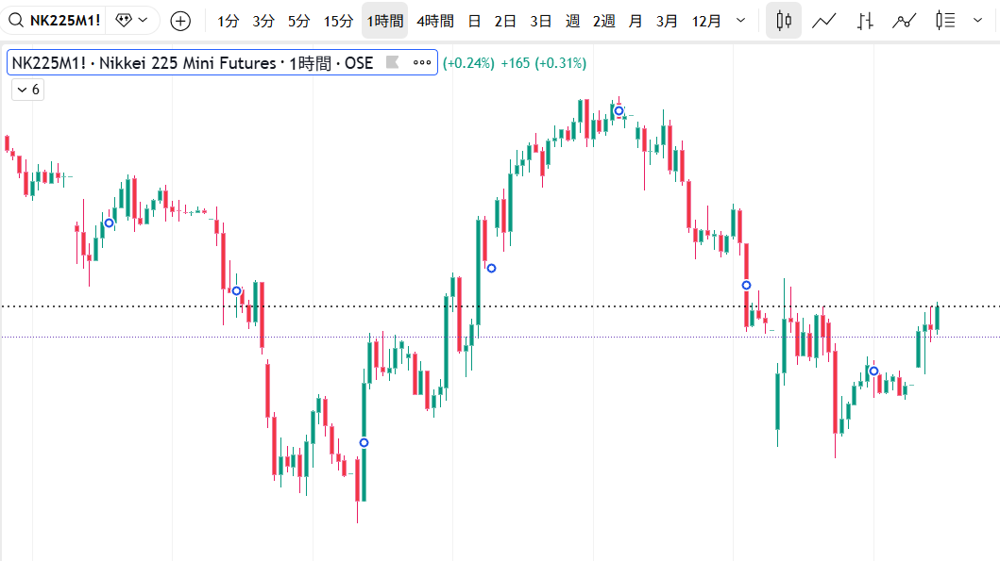

【システムエラー】画像ファイル（chart.png）が見つかりません。
表示されたチャートの右端、点線の「ネックライン」を下抜けた後のリバウンド局面です。テクニカルの定石に基づき、次に取るべき最も合理的な判断はどれですか？
Geminiの分析レポート
実際のチャートが示す通り、価格は $39,000$ 円付近の重要ラインを割り込みました。現在は「本当に上がれないのか」を市場が確認する
リターンムーブの局面です。
かつての「支え（サポート）」は、今や「壁（レジスタンス）」へと役割を変えています。ここを明確に超えられない限り、下落の第2波を警戒するのが中級レベルの鉄則です。
| シナリオ | Geminiの予測確率 |
|---|
| 戻り売り（定石） | 65% |
| もみ合い（レンジ） | 20% |
| 強気回帰（ダマシ） | 10% |
| 予測不能な急騰 | 5% |